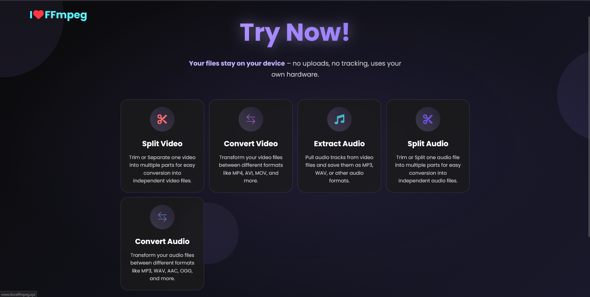

PROJECTS
A collection of open source tools, machine learning experiments, and utilities I build.
An end-to-end machine learning platform engineered to predict PC gaming FPS performance across diverse hardware configurations (CPU, GPU, RAM) and graphical presets. Utilizes an ensemble regression pipeline combining XGBoost, LightGBM, and RandomForest models trained on over 1,790 real-world benchmark entries, paired with ProtonDB integration for Linux and Steam Deck compatibility assessments.
A client-side multimedia processing suite running WebAssembly-compiled FFmpeg (FFmpeg.wasm) entirely within your browser. Perform lossless video trimming, splitting, format conversions (MP4, MKV, AVI, WebM), and audio track extraction locally on your machine with zero file uploads, zero server tracking, and complete privacy.

An automated game server management and backup companion built for Pterodactyl Panel and Crafty Controller. Features a centralized web dashboard, Discord bot commands for remote server power cycling and status alerts, automated cloud backups (Google Drive, S3, SFTP), and schedule management to prevent save data loss.
A specialized background utility designed for VTubers and content creators. Captures low-level raw Windows mouse hardware events and streams cursor coordinates directly to VTube Studio over WebSocket API. This allows VTuber avatar eyes and head tracking to follow mouse movements continuously even in full-screen games where the OS cursor is locked, captured, or invisible.
A lightweight system monitoring application built with Tauri. Runs efficiently in the background to capture real-time hardware metrics (CPU, GPU, RAM, and drive usage) and streams them over a local WebSocket to deliver live system stats to Windows desktop wallpapers and widgets.

A dynamic sci-fi wallpaper application for Wallpaper Engine and Windows desktop. Connects directly with Nekoframe to render live PC hardware statistics (CPU, RAM, GPU, drive space) and real-time audio spectrum visualizers straight onto your Windows wallpaper.
A lightweight standalone desktop client for YouTube Music designed to eliminate heavy browser tabs and memory overhead. Provides seamless background audio playback, persistent media control key shortcuts, desktop notifications for track changes, and a distraction-free minimalist interface.

A fast web-based audio retrieval application leveraging yt-dlp and spotdl under the hood. Allows users to paste song, album, or playlist links to automatically fetch high-bitrate audio with embedded cover art and ID3 metadata tags directly through a clean browser interface.

A simple and straightforward desktop utility designed for rapid YouTube video and audio downloading. Automatically queries YouTube video streams to list all available resolutions and audio formats, letting users select quality preferences and download full HD/4K MP4 videos or high-quality MP3s with a single click.

No projects match your search criteria.